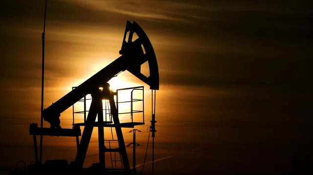
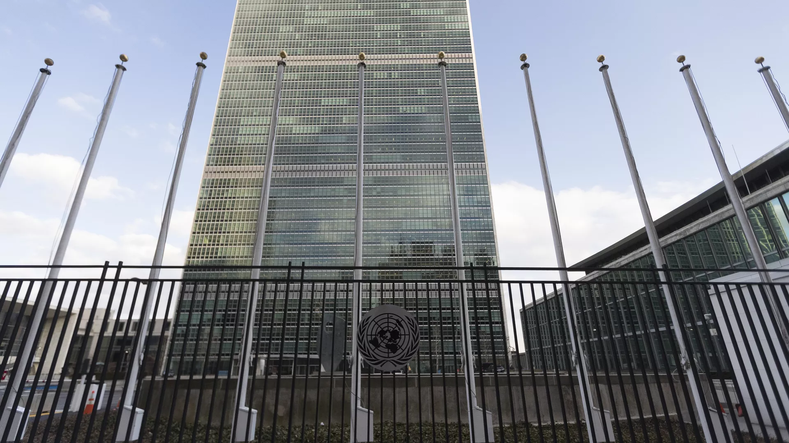
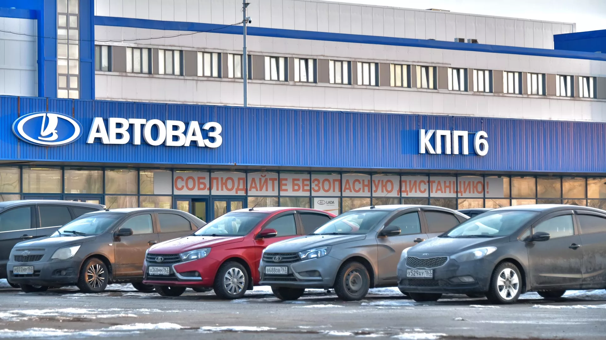

В Иране назвали решение о потолке цен на российскую нефть данью США
МОСКВА, 10 фев – РИА Новости. Решение Европы установить потолок цен на российскую нефть – "дань" США, страны ЕС не настолько сильны, чтобы определять цены на нефть из РФ, тем более что такое решение нанесет ущерб потребителям энергоресурсов, в том числе и в самой Европе, заявил РИА Новости экс-глава Организации по атомной энергии, член комиссии по энергетике парламента Ирана Ферейдун Аббаси-Давани.
"Это решение (фиксированный потолок цен на нефть России – ред.) – больше политический, пропагандистский акт. Европа не настолько могущественна, чтобы устанавливать потолок цен на российскую нефть", – сказал Аббаси-Давани.
По его словам, "Европа находится под давлением Соединенных Штатов" и таким образом она "платит дань за выходки Вашингтона". Иранский чиновник считает, что такая политика европейских стран продлится недолго, "в скором времени они придут в себя, сейчас же они больше кричат лозунги".
Он также отметил, что в случае установления потолка цен такое решение вряд ли отрицательно скажется на российской экономике, так как Москва более влиятельна в данной сфере производства и европейским странам придется следовать политической линии Москвы.

В ООН заявили о важности экспорта российских удобрений
ООН, 10 фев – РИА Новости. Официальный представитель генсека ООН Стефан Дюжаррик заявил о важности обеспечения экспорта удобрений РФ в рамках "продуктовой сделки" для борьбы с угрозой глобальной продовольственной безопасности.
"Генеральный директор конференции ООН по торговле и развитию Ребекка Гринспан и ее команда продолжают тесно контактировать со всеми соответствующими игроками, чтобы попытаться сгладить путь и обеспечить, чтоб это произошло (чтобы российские удобрения пошли на экспорт – ред.). Потому что это часть подписанных договоренностей и это крайне важно в контексте усилий по борьбе с угрозой глобальной продовольственной безопасности", - сказал Дюжаррик.
Зерновая сделка, которую 22 июля 2022 года подписали представители России, Турции, Украины и ООН, предполагает вывоз украинского зерна, продовольствия и удобрений по Черному морю из трех портов, включая Одессу. Согласованием движения судов занимается Совместный координационный центр (СКЦ) в Стамбуле.
Договор истекал 18 ноября 2022 года, но подразумевал автоматическое продление на 120 дней при отсутствии возражений какой-либо из сторон. В МИД РФ заявили, что "таких возражений не поступило", одновременно отметив, что российская сторона допускает техническую пролонгацию "черноморской инициативы" по вывозу украинского зерна без каких-либо изменений по срокам и охвату.
Сама сделка является составной частью пакетной договоренности, которая в том числе предусматривает разблокировку российского экспорта продовольствия и удобрений - Москва отмечала, что именно это выполнено не было. При этом со стороны ООН были заверения, что ограничения будут сняты.
Минфин США пообещал усилить санкционное давление за поддержку ВПК России
ВАШИНГТОН, 10 фев - РИА Новости. Минфин США в ближайшие недели и месяцы будет усиливать санкционное давление на страны и лица, которые оказывают поддержку ВПК РФ в обход антироссийских санкций, заявил заместитель главы американского финансового ведомства Уолли Адейемо.
О планах "усиления внимания на борьбе с действиям по обходу санкций в ближайшие недели и месяцы" Адейемо заявил в ходе состоявшегося по инициативе минфина круглого стола с группой экспертов по санкциям и внешней политике.
Как заявил участникам мероприятия представитель ведомства, минфин также будет концентрировать свои усилия на противодействии "третьим странам и лицам, причастным осознанно или неосознанно к поставке России материалов, в которых она остро нуждается для восполнения нужд своей армии". Эксперты, в числе которых было около трех десятков экономистов и представителей бизнеса, "высказали свое видение того, как наилучшим образом достичь этого", - говорится в сообщении минфина.

"АвтоВАЗ" запустил предсерийное производство Lada Vesta NG
САМАРА, 10 фев - РИА Новости. "АвтоВаз" в пятницу запустил предсерийное производство Lada Vesta NG на заводе в Тольятти, планируется, что серийный выпуск автомобилей начнется в начале марта, сообщила пресс-служба правительства Самарской области.
Ранее модели Lada Vesta собиралась на предприятии компании в Ижевске, однако в августе было принято решение перенести производство на основную площадку. В ноябре 2022 года "АвтоВАЗ" сообщил, что собрал на заводе в Тольятти первую тестовую Lada Vesta NG.
"В пятницу, 10 февраля, губернатор Самарской области Дмитрий Азаров и президент АО "АвтоВАЗ" Максим Соколов на тольяттинской площадке дали старт предсерийного производства Lada Vesta NG", - говорится в сообщении.